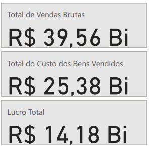
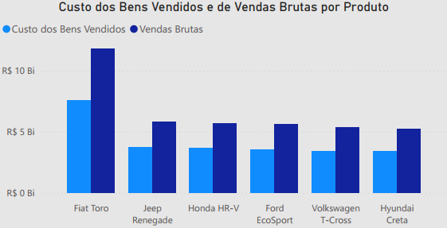
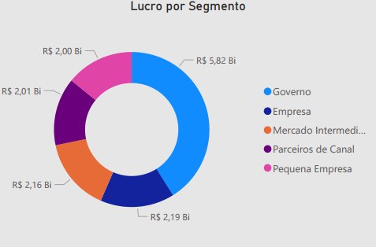
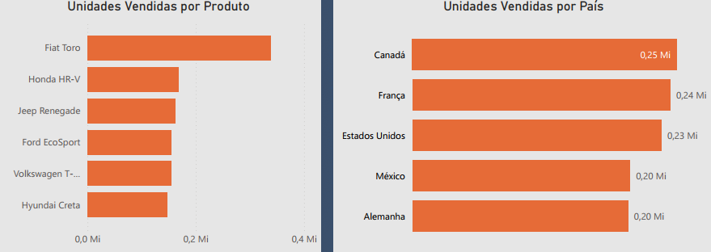
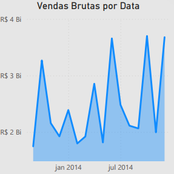
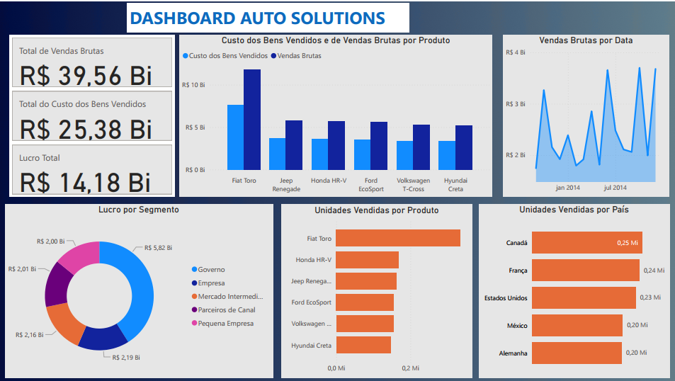

Project: Auto Solutions Dashboard - Sales Performance and Profitability Analysis
Introduction
This project involves the creation of a Dashboard developed in Power BI, with the objective of offering a comprehensive and detailed view of sales performance, costs, and profitability in the automotive sector. The solution was designed to assist managers and analysts in monitoring key financial and operational indicators by product, date, segment, and geography, enabling the identification of opportunities and challenges for optimizing commercial and production strategies.
Project Structure
The main requirements and indicators developed for this analysis were:
- Financial Overview: Display of total Gross Sales, Cost of Goods Sold (COGS), and Total Profit, providing a quick overview of financial health.
- Product Performance: Analysis of Cost of Goods Sold and Gross Sales broken down by vehicle models (Fiat Toro, Jeep Renegade, Honda HR-V, Ford EcoSport, Volkswagen T-Cross, Hyundai Creta).
- Profit by Segment: Detailing the profit generated by different market segments (Government, Company, Internal Market, Small Businesses, Partners).
- Units Sold: Quantification of units sold by product and by country, allowing for the identification of the most popular vehicles and highest-volume markets.
- Gross Sales Trend: Visualization of the evolution of gross sales over time, to identify seasonality and trends.
Technologies Used
For the construction of this dashboard, the technologies used were:
Power BI Desktop: To connect data sources, model information, create necessary metrics, and develop the interactive visuals that compose the dashboard. Its ability to transform complex data into visual insights was crucial for the project.
Figma: Dashboard prototyping and design were done with Figma.
ETL Process (Extract, Transform, and Load)
The ETL process for this dashboard followed the steps of:
- Extraction: Data was obtained from its original sources, coming from sales, inventory, and accounting management systems. The data was exported from a
.csvfile, containing information about products, sales dates, costs, selling prices, customer segments, and countries. - Transformation: Using Power Query, Power BI’s data transformation tool, cleaning and enrichment operations were performed. This included:
- Standardization of product and segment names.
- Handling of temporal data to allow analysis by date and period.
- Data modeling was carefully defined, establishing relationships between tables, ensuring correct aggregation and filtering of information.
- Loading: After all transformations and modeling were completed and validated, the data was loaded into the Power BI data model, ready for the creation of reports and dashboards.
Dashboard
The Auto Solutions Dashboard presents, in a clear and intuitive way, a layout that prioritizes the visibility of the most important indicators at the top, followed by more detailed analyses. The visuals are diverse, including key indicator cards, bar charts for product and geography comparisons, segment charts for profit, and line charts for temporal trends, allowing users to deeply explore the data, filtering by product, segment, or period, and thus obtaining specific insights for their needs.
Insights
The analysis of the data presented in the Dashboard reveals crucial information about business performance:
- Global Financial Performance:
- The dashboard begins with a strong financial overview, indicating a Total Gross Sales of R$ 39.56 Billion.
- The Cost of Goods Sold (COGS) is R$ 25.38 Billion.
- This results in a significant Total Profit of R$ 14.18 Billion.
These macro indicators demonstrate a robust sales operation and effective cost control, culminating in healthy profitability for the analyzed period.

- Gross Sales and Costs by Product:
- Analyzing the “Cost of Goods Sold and Gross Sales by Product”, it is observed that vehicles such as the Fiat Toro and Jeep Renegade show the highest financial volumes.
- The Fiat Toro records Gross Sales of R$ 10 Billion and a Cost of Goods Sold of R$ 4 Billion.
- The Jeep Renegade also stands out with Gross Sales of R$ 5 Billion and COGS of R$ 3 Billion.
This granularity allows identifying the products that contribute most to revenue and the associated costs, directing attention to optimizing the margin per product.

- Profit by Market Segment:
- The analysis of “Profit by Segment” is crucial to understand the contribution of each customer type, as visualized in the donut chart.
- The Government segment proves to be the most profitable, with R$ 5.82 Billion in contribution, standing out as the largest profit generator.
- Following this, the Company (R$ 2.19 Billion) and Intermediate Market (R$ 2.16 Billion) segments are next in terms of profitability, demonstrating the importance of these markets for total revenue.
- Channel Partners (R$ 2.01 Billion) and Small Business (R$ 2.00 Billion) also contribute significantly, though with slightly smaller values.
This clear distinction of profitability by segment allows the company to assess where its sales and marketing efforts are generating the highest return, and where there may be opportunities to optimize strategies for segments with lower contribution.

- Units Sold by Product and Country:
- In terms of volume, the Fiat Toro leads with 0.25 Million units sold, closely followed by the Honda HR-V (0.24 Million) and Jeep Renegade (0.23 Million).
- Geographically, Canada is the country with the highest sales volume (0.25 Million), matching the Fiat Toro’s performance in units. Other important markets include France (0.23 Million), United States (0.20 Million), Mexico (0.20 Million), and Germany (0.20 Million).
This data is valuable for inventory management, logistics, and for directing regionalized sales campaigns.

- Gross Sales Trend by Date:
- The “Gross Sales by Date” chart shows the evolution of sales from January to July 2014.
- It is observed that gross sales start at R$ 2.00 Billion in January 2014, with peaks at R$ 2.16 Billion and R$ 2.19 Billion in some subsequent months.
This temporal visualization is fundamental for identifying sales patterns, seasonality, and the impact of any marketing initiatives or specific events that occurred during the period.

Considerations
The Dashboard provides a robust basis for strategic decision-making in the automotive sector. From the insights obtained, some important considerations emerge:
- Product Margin Optimization: With the clear visualization of Gross Sales and COGS by product, the company can deepen the cost-benefit analysis of each model. This can lead to decisions on optimizing production processes, negotiating with suppliers, or even adjusting pricing strategies for specific models that show lower margins.
- Market Strategies by Segment and Country: The analysis of profit by segment and units sold by country allows the company to direct its sales and marketing efforts more effectively. For example, if the “Government” or “Company” segment is highly profitable, the company can invest more in B2B sales teams. Similarly, understanding the markets with the highest sales volume, such as Canada, USA, and European countries (France, Germany), can influence the allocation of distribution and advertising resources.
- Inventory and Demand Management: Identifying the models with the highest sales volume (Fiat Toro, Honda HR-V, Jeep Renegade) is vital for inventory management. Maintaining adequate levels of these vehicles avoids sales losses due to product shortages and optimizes storage costs. The temporal analysis of gross sales (Jan-Jul 2014) can be expanded to predict demand peaks and troughs, allowing for a more reactive and efficient supply chain.
- Identifying Growth Opportunities: By understanding which products and markets are performing well, the company can seek to replicate these successes in other regions or for other models. On the other hand, underperforming products and markets can be subject to investigations to understand the reasons and develop recovery plans.
Conclusion
The Dashboard was an excellent analytical tool that transforms data into actionable information. Its main contribution lies in its ability to:
- Provide detailed financial control, from the global sales and cost overview to profitability by product and segment.
- Identify the most successful products and markets in terms of sales volume.
- Enable temporal trend analysis for more effective demand management.
This project demonstrates the ability to create Business Intelligence solutions that empower organizations to deeply understand their performance, optimize operations, mitigate risks, and, ultimately, drive growth and profitability in the competitive automotive market. It is a clear example of how data visualization can be a strategic differentiator.
Link to the Dashboard:
Click here to access the report in Power BI
